Health - Predict Lab
Note
Please follow the Action statements to navigate the steps and perform the lab.
Intro
I’m a Reliability Engineer (RE) and my role is to maintain the reliability of the grid. My main responsibility is to ensure that the grid stays up and operational. I’m also responsible for making short, medium and long term investment decisions that drive maintenance and replacement policies. I use asset condition and operational data to gain insights into Asset Health, Probability of Failure and Risk, both today and into the future.
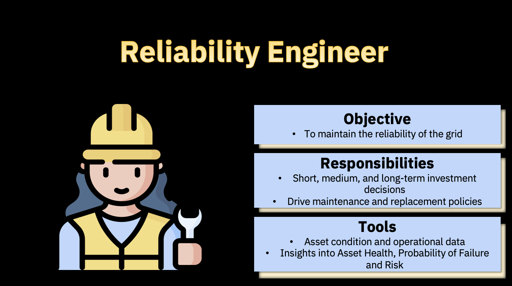
Thankfully I have a Health and Predict - Utilities solution from IBM with advanced analytics that help me do my work efficiently and confidently without relying on spreadsheets or point solutions that consider 1 or 2 data sources. Health and Predict - Utilities incorporates multiple data sources such as Asset Master and Work order data, historical failure data, GeoSpatial Data, Inspection and Test Logs, IoT and Sensor data.
Health and Predict - Utilities provides a flexible Asset condition framework for mining the asset condition data. Health and Predict - Utilities helps me identifying assets that are at greatest risk of failure, across different circuits/feeders, substations and regions. The risk assessment helps me drive asset and work management activities in Maximo Manage or other EAM systems to keep the grid up, reduce operational expense, optimize and defend capital expenditures resulting in better outcomes.
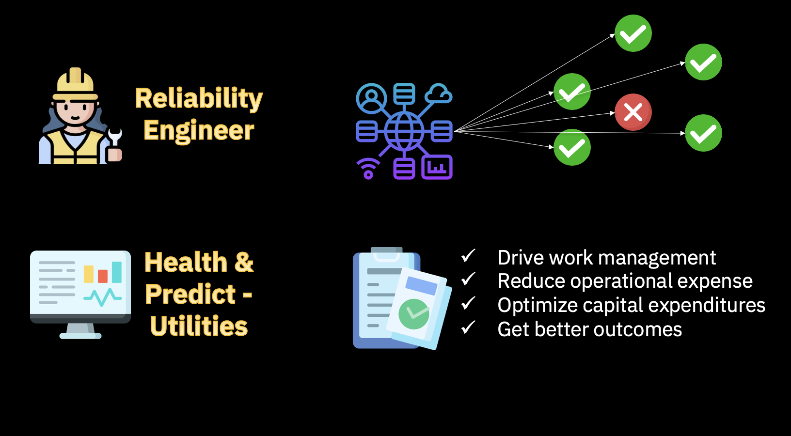
Identify Assets at Risk
Maximo Health and Predict are targeted to the RE, and provide a view of the current state of an enterprise's assets, and projects future conditions of those assets.
Maximo Health and Predict – Utilities is an extension of Health and Predict designed specifically for the Utilities industry.
Value: Health and Predict - Utilities arm the RE with AI-powered insights to take actions to extend the life of the Utility’s assets, reduce maintenance costs, and eliminate unplanned downtime. proactive in my maintenance planning. The easiest way to do this is by using the work queue feature.
Action: From the main Maximo Application Suite (MAS) page, select the Industry solutions tab, then click Health and Predict – Utilities.
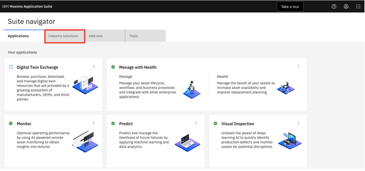 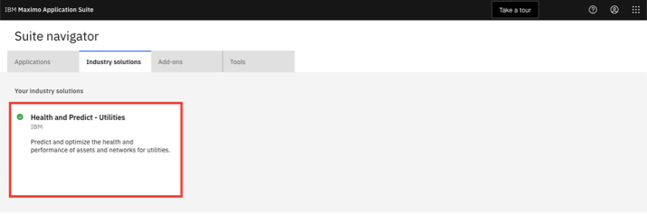
On the main screen, we can see a universal view of our managed assets in a familiar grid view.
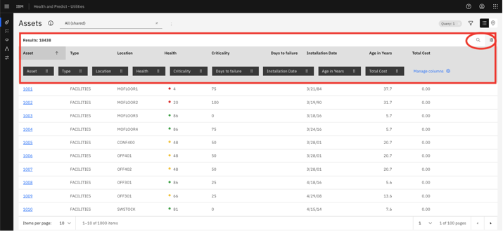
Value: This is particularly valuable to me as the RE because we can see a mix of both IT data (from Manage) and OT data (from Monitor) together in a single view.
This asset data is coming from Maximo Manage, but we can connect to other EAM systems.
Saved Asset Views
Different views of the data can be generated to make it easier to identify critical assets. On this grid, we can add and move columns, filter, search and sort. We can even create a private view and save it.
Value: We've created a saved view to so that we don’t have to start over every time. This view filters on my Substation Transformers.
Action: Use the selection box to show your saved view. If you do not see your saved view here, refer to the setup instructions.
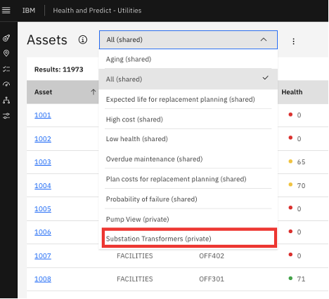 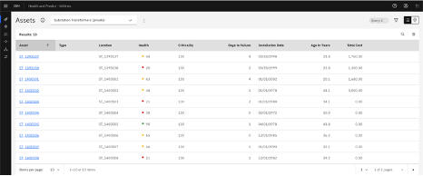
In this view, we can see some columns with calculated data. We can see Health scores, which are created for groups of assets from the Scoring tab.
Value: Included with Health and Predict – Utilities are notebooks with predefined industry standard formulas to calculate health, criticality, risk, end of life and effective age scores for assets in the Utilities industry.
Similarly, information in the Days to Failure column comes from a predictive model scheduled from the Predict grouping tab.
Here is a list of asset classes loaded in the demo system. Note: this may change over time.
- Substation Transformers / Substation Power (IBM Transformers Tap Changers)
- Circuit Breaker
- Air Blast Circuit Breaker (IBM Circuit Breakers Air Blast)
- Air Magnetic Circuit Breaker
- Circuit Breaker
- Oil Circuit Breaker (IBM Circuit Breakers Oil)
- SF6 Circuit Breaker
- Vacuum Circuit Breaker
- Distribution Transformers (IBM Transformers Tap Changers)
- Overheads (multiple)
- Undergrounds (multiple)
- Instrument Transformers
- Dry Current Transformer
- Oil Filled Capacitive Voltage Transformer
- Oil Filled Current Transformer (IBM Instrument Oil Filled CTs)
- Oil Filled Voltage Transformer
- SF6 Filled Current Transformer
- Switch gear / Gas Insulated Switch gear (IBM Gas Insulated Switchgear)
Map View
Another view to help us identify assets in trouble is the map view.
Value: Seeing how the assets are spatially distributed may assist us with identifying and investigating assets at risk. This is particularly true in the Utilities industry.
We’ll look at a region that contains a mixture of transformers, circuit breakers, cables (OTWs), and switches.
Action: First, reset your view to show ALL assets. Then, click the filter symbol, select the edit symbol for containers, select "NIXON9098", click OK, then click Apply.
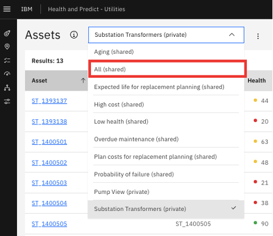 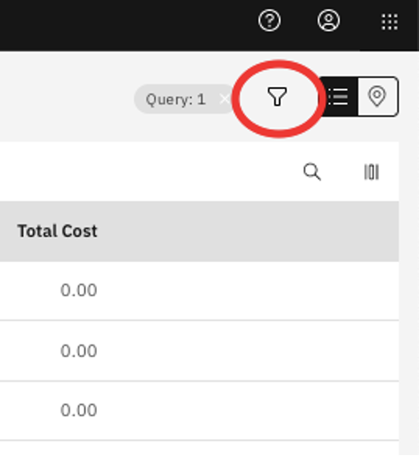 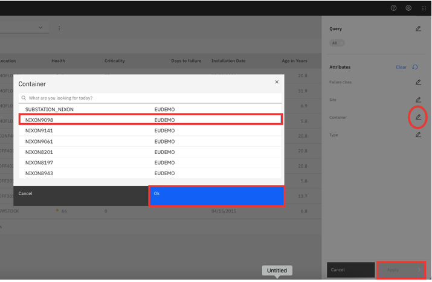
We can see there are 261 assets in this container. When we sort by the health score from low to high, we find there are many assets in health scores in poor health, and many of them have a Criticality score of 0. This is concerning given the importance of these assets to the grid performance in the distribution network.
Action: Click “Health” in the title bar to sort
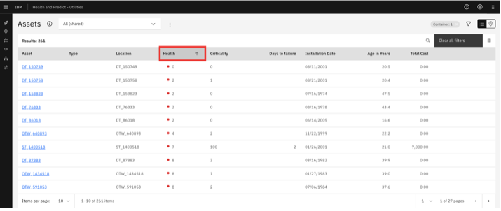
By selecting the icon in the upper right of the screen, we can see the selected assets on a map view.
The different pin colors and icons represents the health of the assets, according to the legend at the bottom left of the screen. We can quickly have a understanding of where the assets has the poor health.
Action: Click "Map" button
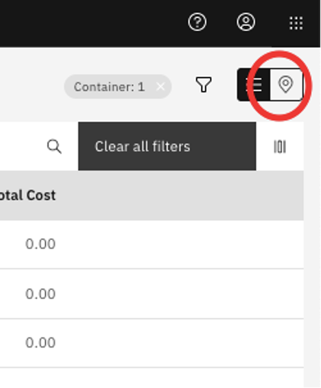 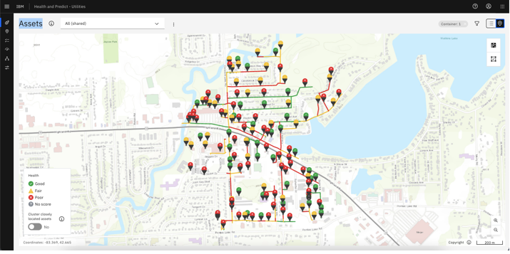
By turning on the Container selection, a polygon will appear around the assets in the container. The color of the container will reflect the overall health of the container.
Action: Click the "Container" icon, and toggle on the "Container". Zoom out to see the container color.
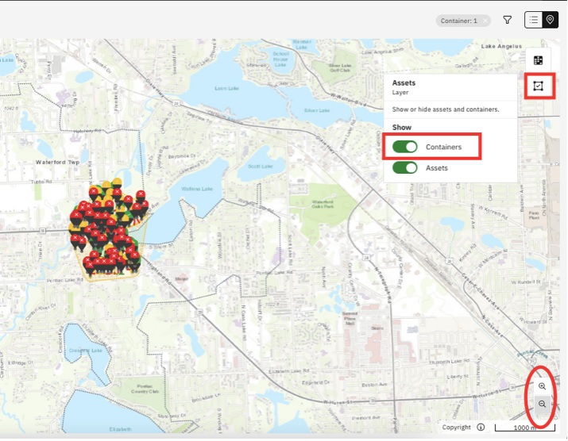
We can also switch between different scores by clicking the Score icon and selecting another score. The asset colors, and container color, will change accordingly.
Action: Click the Score icon and select another score like “End of Life”
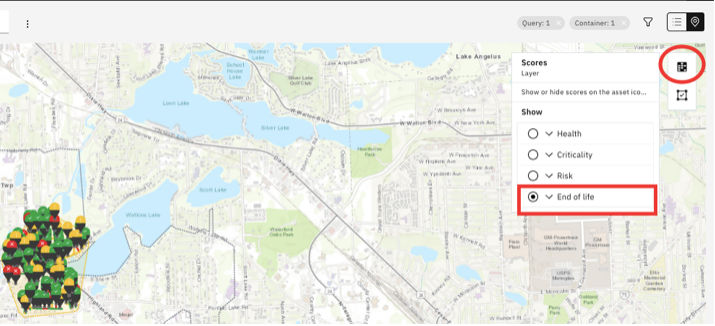
We’ll return to the Health score view, and hover over different assets, and the container, to see health scores.
Action: Click the Score icon and “Health” to return to the original view. Hover over assets and the container.
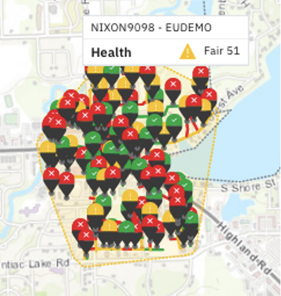
By clicking on the container, we can see all of the scores on a single card.
Action: Click the container "NIXON9098"
Value: The KPIs displayed on the preview card gives us an overall summary of the assets in this region, or the container.
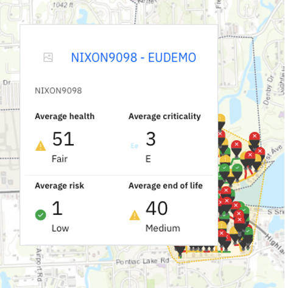
We can also zoom in and click on each of the pins to view the key KPIs of the selected asset. From this view, we can create plans, add a flag, or submit a work order by clicking the "Action" button.
Action: Zoom in. Click the pin for "ST_1400518" to see the card. Click on the action tab to see the options.
Note that we CAN click on the name to open the asset detail page. However, we’ll continue the identification of asset in poor health through another process.
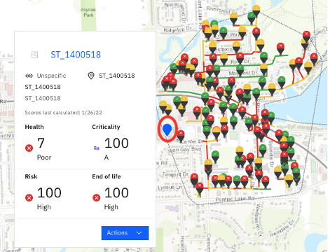
Work Queues
We’ll continue our process to identify assets in trouble. We want to avoid unplanned downtime, and be more proactive in our maintenance planning. The easiest way to do this is by using the work queue feature.
Action: Select “work queues” from the selections on the left
Work queues are preconfigured views designed to help us find what we're looking for...and to manage our day-to-day activities.
Value: These are particularly valuable to a RE who needs to address a specific problem, like a utility, trying to avoid unplanned downtime.
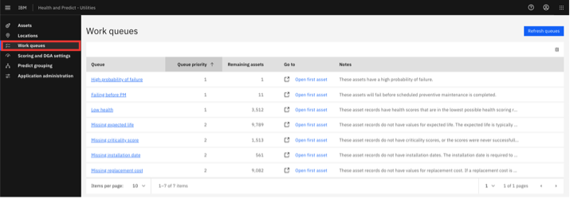
There are a number of work queues included with Health and Predict.
- There are work queues specific to Predict, like assets with a High Probability of Failure.
- There's also a work queue for identifying assets in poor health.
- And there are work queues that show assets with missing data.
Value: The missing data work queues are extremely useful to a RE as they can help identify gaps in data necessary to create health scores or predictive failure models.
Action: Select "Failing Before PM” work queue
We'll select the Failing Before PM work queue to see all of the assets with scores in that work queue. As a RE at a Utilities plant, it is critical for me to avoid failures.
- In this work queue, we can see that there are several pumps and Substation Transformers that have a predicted failure before their next planned maintenance date.
- 2 of the transformers are in our container that we viewed earlier.
- We’ll select “ST_1400518” in the queue as we start to manage our workload for the day, investigating and addressing all of the assets in the queue.
Action: Select “ST_1400518” which opens the asset detail page [DETAILS ON THIS PAGE WILL VARY AS THIS IS A LIVE DEMO SYSTEM]
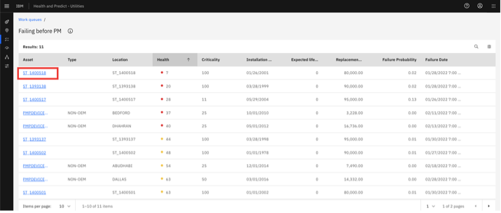
Investigate Further into Asset Details
On the top of the asset detail page we see the resulting scores from the predefined notebook for this Substation Transformer. These are health, criticality, risk, end of life and effective age score. Note that effective age is a calculation using the actual age and the health score. An asset in poor health will have an effective age greater than its actual age.
We can also see the next Preventive Maintenance date and the MRR…coming from Maximo Manage.
Value: The asset detail page is an incredibly useful tool for investigating assets. We can find all the asset information presented on a single page, in easy-to-read tables, charts and graphs.
On the top of the page, we see details about our asset, and KPIs that give us a snapshot of its current state.
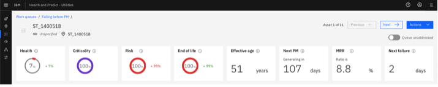
For this asset, we have a health score of 7, which is in our red zone. We can also see that it has increased 7 points since it was last calculated.
This asset also has a criticality and risk score.
We can see this asset has x.x% of its expected remaining useful life, based on the install date and manufacturers recommended life.
We can see that our asset is projected to fail in the next 2 days, but our next maintenance isn't planned for 107 days.
When we started our investigation, we knew the asset was expected to fail before its planned maintenance. But, just by looking at the KPIs, we have additional evidence that this asset is in trouble, and that some action needs to be taken.
To learn more about the health of our asset, we can go to the Health breakdown widget.
Action: Scroll down the page
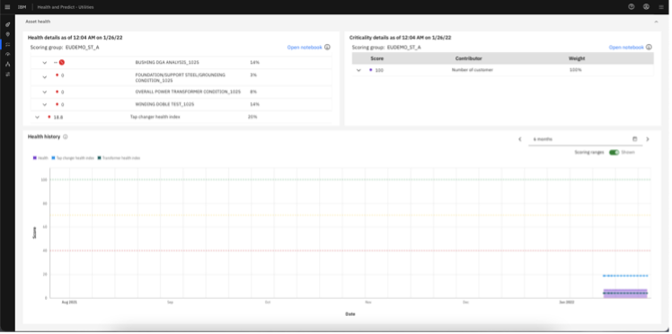
We can expend the view to see the contributors by clicking the chevrons to view the details.
Similarly, we can view the Criticality breakdown widget.
As we scroll down the page, we can see the health history of this asset. The asset health has been low for some time. One more indication that this asset needs attention.
The application supports critical asset-specific calculations and visualizations. Dissolved gas analysis is an example for the transformers. It offers two types of visualization widgets.
Action: Scroll down the page
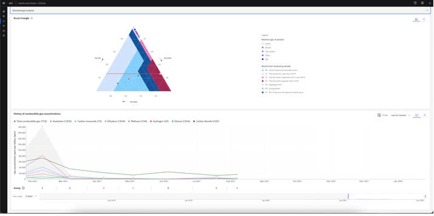
The first one is Duval triangle. It tells us the current dissolved gas situation. We can click on each of the dots to get detailed information.
We can also click the switcher on the top-right corner to view the result in the list view.
The other widget is the history of combustible gas concentrations. It shows the combustible gas trend and rating over time
The rating represents the average acceptability of detected gas concentrations. The rating is determined by the overall factor.
We can hover on each of the assessment dates to get the detailed information.
Action: Scroll down the page
There are several predictive models built to score against incoming sensor data for our asset.
Value: IBM Predict includes templates to help our Data Scientist get started building models to project days to failure, calculate probability of failure, detect anomalies, and generate an asset life curve based on group asset deployment and retirement dates.
These templates include a large number of algorithms and can automatically select the one that best fits our data for the optimal outcome.
Note that also included with MAS is Watson Studio and Watson Machine Learning, both of which our Data Scientist can use for building, training, and maintaining predictive models.
In the case of our asset, our model tells us that it is projected to fail in xx days...plus or minus x days.
- Depending on the richness of our failure history, our Data Scientist can build predictive models for specific failure modes. And we can select those failure modes within the widget to see the projection for each.
- Also in the widget, we get information about our training data in the widget to help us decide when a model should be retrained.
The Failure probability widget can show us how different failure modes impact our predictions. For example, it might show us our asset has a xx% probability of failure in the next xx months due to xx
- Our Data Scientist can build specific models for time periods. And just like the failure modes, we can look at the results by making different selections within our widget.
- Failure probability history shows how the probability of failure for each mode has changed over time.
The factors that contribute to failure show which factors from our training data impacted failures the most, giving us an indication of what may lead to future failures.
The anomaly detection model creates a threshold based on history, and we can see when our asset exceeds that threshold in our widget.
The end of life curve is built based on training data for assets that have been decommissioned. By applying the effective age calculation from the notebook, we can use this curve to estimate our end of life.
The effective age of our transformer is 51 years. The curve produces an end of life probability of 100%...one more piece of evidence to show that this asset needs to be attended to immediately.
Action: Hover NEAR the point where the effective age crosses the curve. Scroll down the page.
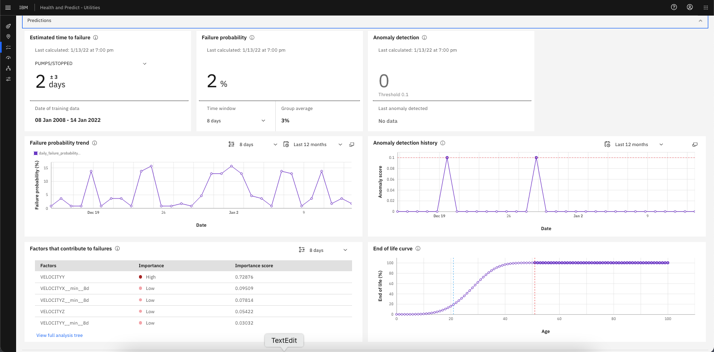
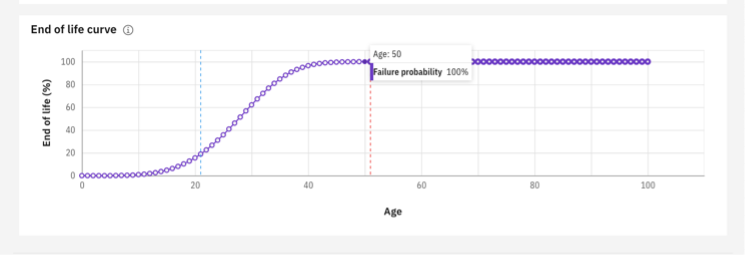
As we continue to scroll down the page, we can see the "Asset timeline" which shows predicted failures, planned preventive maintenance, past failures, work orders and inspections.
We can hover over the points to see more details.
Value: This view helps me to understand if the asset is being maintained well, or if I need to consider an update to the maintenance policy. The hover details also give me an indication of potential future problems.
At the bottom of the page, is an asset timeline that shows us several pieces of key information about our asset in the same graph. For example, we can see that I have a predicted failure (on the top line of the graph), that will occur before our next planned maintenance (on the second line of the graph).
Value: Information on the chart, like past work orders and inspection, provide valuable insight into our asset's history, and may support what kind of action we take. While each piece of information, or widget, gives us insight into the state of our asset, all of the information together, gives us a richer view, and helps us make a data-driven decision on how to address this asset.
Action: Hover over a point on the timeline. Scroll down the page.
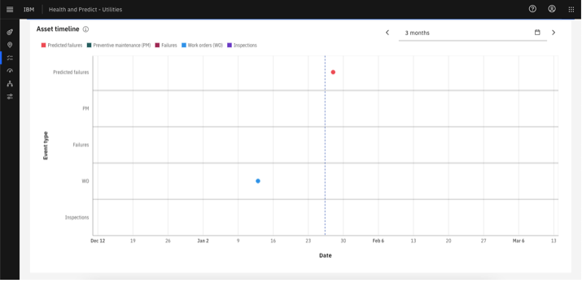
Take Action
We now have enough evidence from our investigation to take some action against this asset. We can scroll to the top of the screen, and click the "Action" button to see our options.
We can add a replacement flag to this asset to make sure it is marked and will be replaced in the next cycle of the replacement planning.
Action: Scroll to the top of the page and click the Actions drop down.
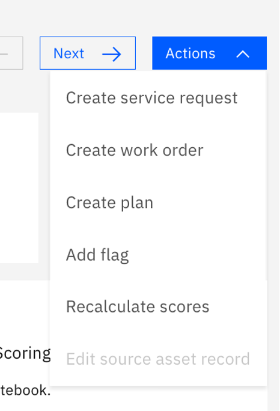
If necessary, we can create a plan directly for this selected asset.
Action: Click the Add Flag option.
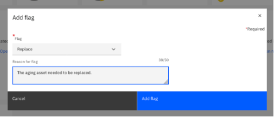
However, this asset is still needed urgent maintenance before the replacement.
Action: Click the "Action" button, then "Create work order". We’ll create an emergency maintenance work order for this asset.
The risk assessment helps me drive asset and work management activities in Maximo/SAP, reduce operational expense, optimize and defend capital expenditures resulting in better outcomes.

Action: Review the options, but do not actually create the work order.
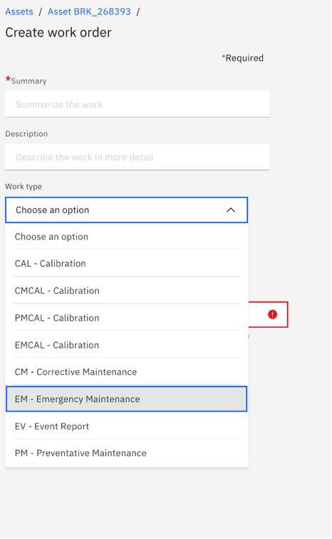
As the Reliability Engineer, maintaining the grid, I was able to use IBM Maximo Health and Predict – Utilities to identify assets at risk, investigate those assets, and finally take an action to prevent a failure and unplanned downtown…saving thousands of dollars, and maintaining the integrity of the grid.
My action with also help short, medium and long term investment decisions that drive maintenance and replacement policies.
Thank you for following along!